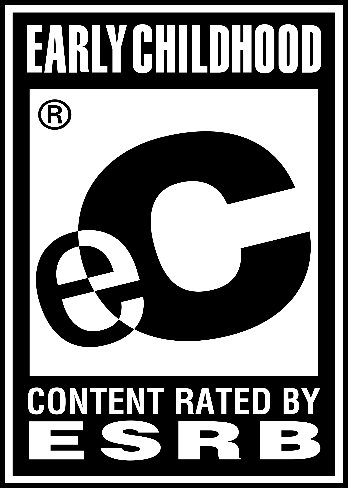
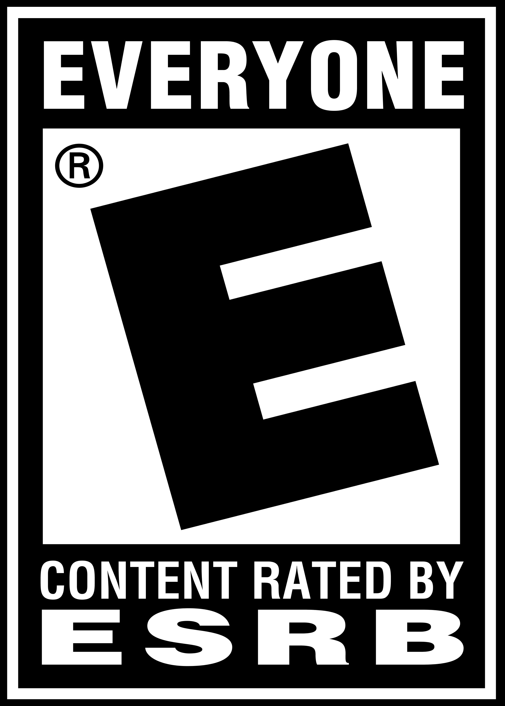
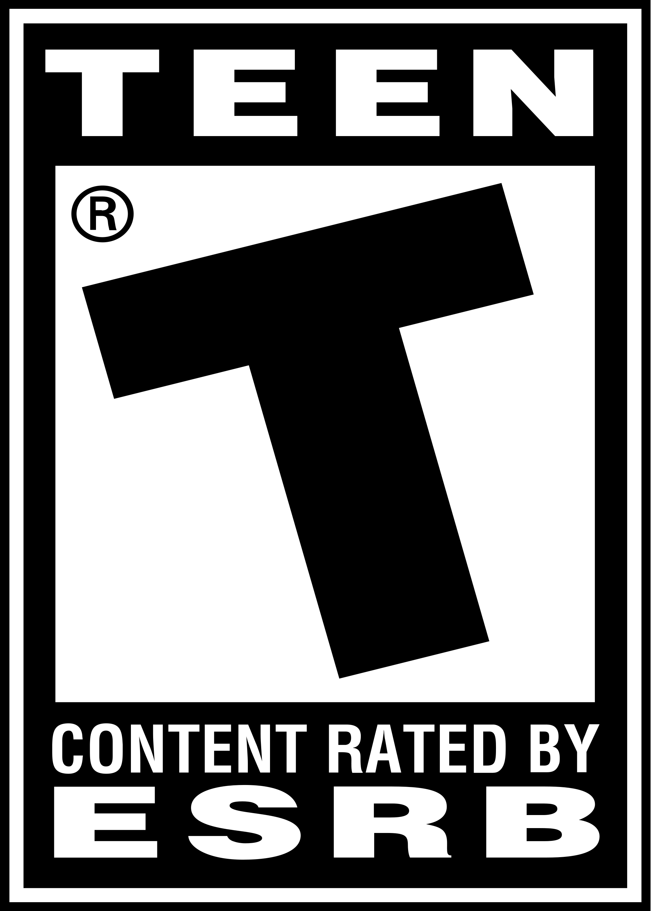
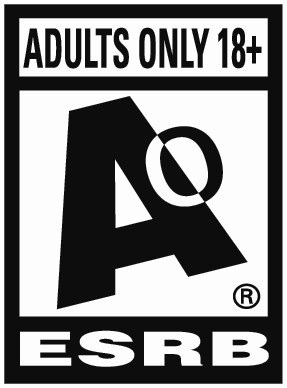
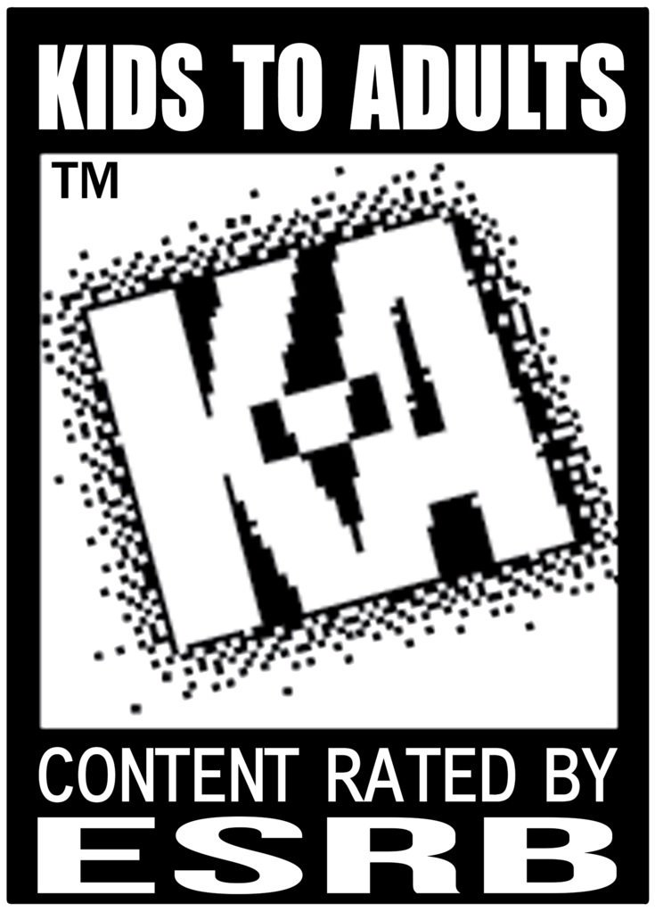

What to know about age rating systems for video games
Below is a guide to age rating systems for video games from across the globe. Study up on these and you'll be ready to approve of any video game on the spot while in the store.
ESRB

This is the logo for "Early Childhood" games appropriate for AGES 3+. It's extreamly rare to see a retail video game with this logo in the corner of the box, and are usually only edutainment games.
"Rated E for Everyone" is a welcoming phrase spoken at the start of many advertisments for family-friendly games appropriate for AGES 6+. Keep in mind, the rating is E for everyone, meaning it's not necessarily a "kid's game," but it is absolutely kid appropriate.

This logo looks very similar to the E for Everyone logo, but notice the "10+" in the corner. That means the game is appropriate for everyone AGES 10+. Getting this one confused for a regular E rating isn't the end of the world, but it does mean the game will have something about it that makes it slightly more intense than regular E rated games.
The middle of the road for content appropriate for teenagers, "T for Teen" games are appropriate for AGES 13+. Teen rated games are generally somewhat tame, but can still get away with a whole lot if the developers know how to stretch the rating. While violence will be minimal, small amounts of vulgarity can be sneaked into dialog and even songs.

M for Mature is quite possibly the currently most common age rating and is appropriate for AGES 17+. M rated games require either ID to be shown at checkout, or the company of a parent or guardian, so kids can't buy them without parents knowing, unless they download them digitally, so be sure to moniter digital purchases as well.
These games are for Adults Only. AGES 18+ . Despite being the most adult rating possible for only the most vulgar and violent vidoe games, it does have one thing in common with the "Early Childhood" games, and that's how rare it is to see on the store shelves. It almost never happens, but Adult Only rated games can still be found available for digital downloads on computers and usually only for "strong sexual content." With proper computer advisory these can easily be avoided.
This age rating is trivial because it's outdated. From 1994 to 1998, "Kids to Adults" were put on the cover of games appropriate for AGES 10+ and has since been replaced with "E for Everyone."

"Rating Pending." If you see this on the cover of a video game, or before the advertisment for one, it means the ESRB hasn't seen enough of it yet to give it a proper rating. If the game is a spin-off or sequel of a pre-existing franchise, a look at the previously existing games in the series will give you an idea of what the game will be rated when it launches.